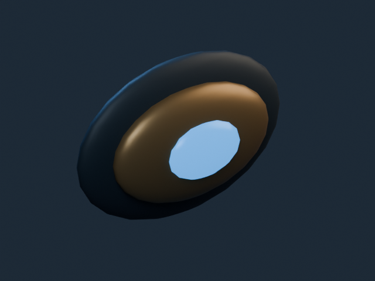
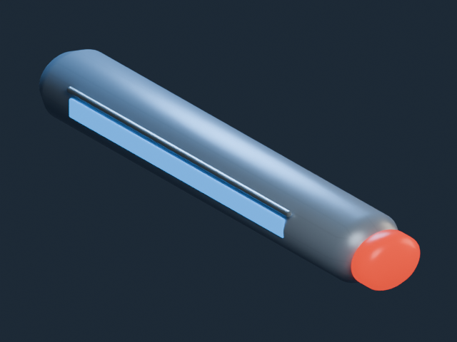
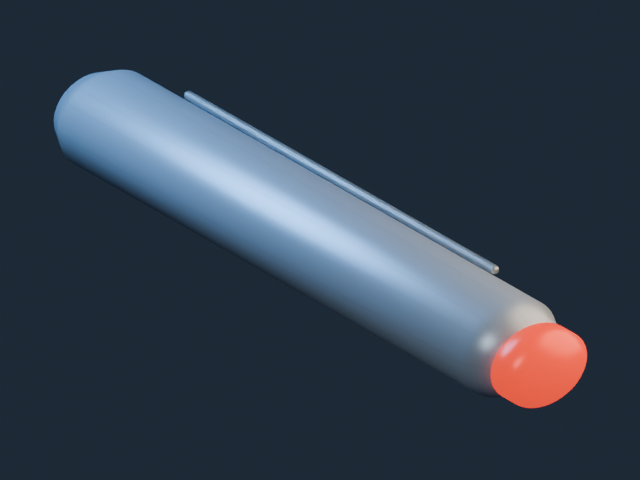
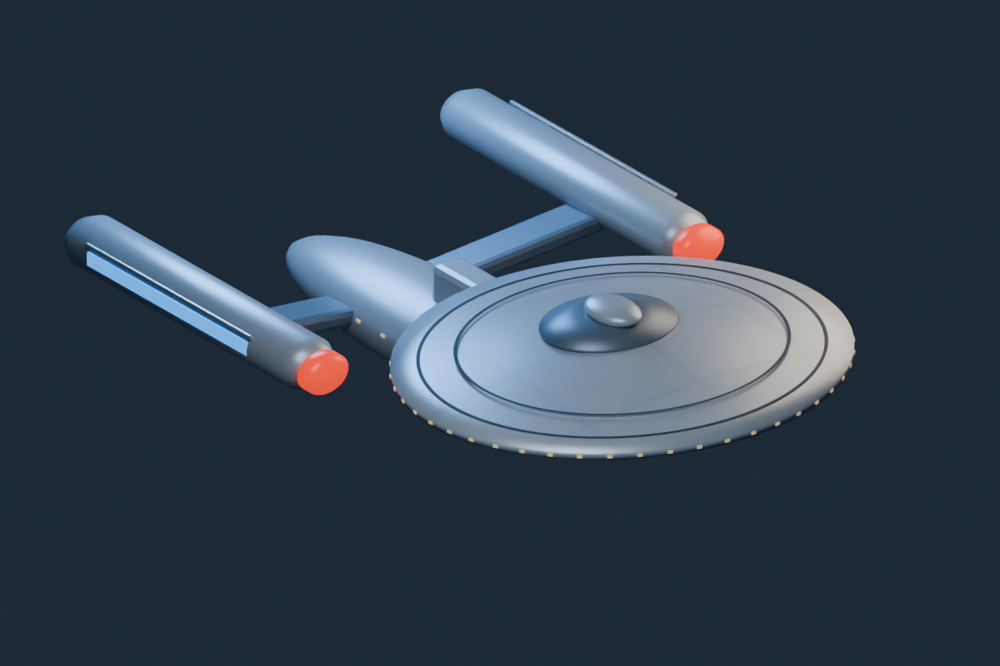

Actual asset proofs rendered in Blender CPU. Native axis conversion, URP appearance and owner acceptance remain open. Separated existing original components. Art-only transforms reconstruct the parent; no gameplay module/socket or external Galaxy compatibility.



